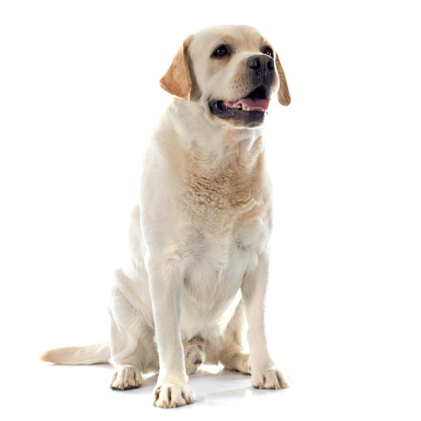
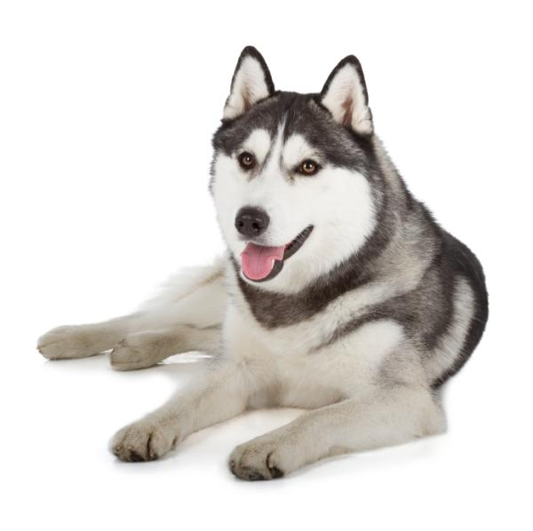
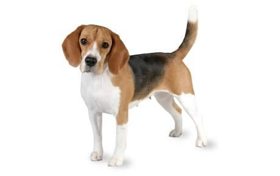
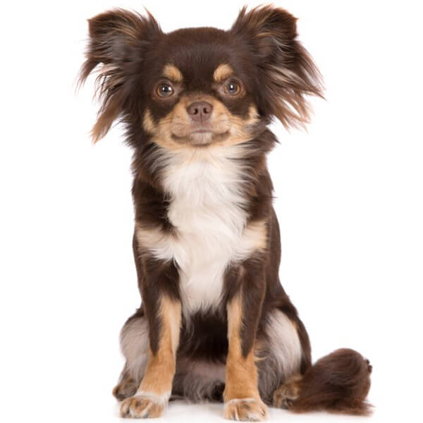
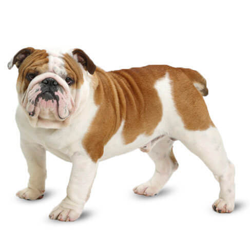
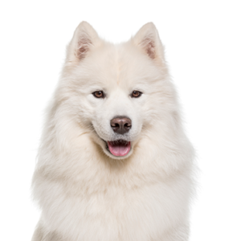

| Dog | Dog Breed | Description |
 |
Border Collie | The Border Collie is a British breed of herding dog of medium size. Widely considered to be the most intelligent dog breed, they are descended from landrace sheepdogs once found all over the British Isles, but became standardised in the Anglo-Scottish border region. |
 |
Pomeranian | The Pomeranian is a breed of dog of the Spitz type that is named for the Pomerania region in north-west Poland and north-east Germany in Central Europe. Classed as a toy dog breed because of its small size, the Pomeranian is descended from larger Spitz-type dogs, specifically the German Spitz. |
|  | Labrador Retriever | The Labrador Retriever or simply Labrador is a British breed of retriever gun dog. It was developed in the United Kingdom from fishing dogs imported from the colony of Newfoundland, and was named after the Labrador region of that colony. |
|  | Siberian Husky | The Siberian Husky is a medium-sized working sled dog breed. The breed belongs to the Spitz genetic family. It is recognizable by its thickly furred double coat, erect triangular ears, and distinctive markings, and is smaller than the similar-looking Alaskan Malamute. |
|  | Beagle | The beagle is a breed of small scent hound, similar in appearance to the much larger foxhound. The beagle was developed primarily for hunting hare known as beagling. |
 |
Shih Tzu | The Shih Tzu is a toy dog breed originating from Tibet and having been bred from the Pekingese and the Lhasa Apso. Shih Tzus are known for their short snouts and large round eyes, as well as their ever growing coat, floppy ears, and short and stout posture. |
|  | Chihuahua | The Chihuahua or Spanish: Chihuahueño is a Mexican breed of toy dog. It is named for the Mexican state of Chihuahua and is among the smallest of all dog breeds. It is usually kept as a companion animal or for showing |
|  | Bulldog | The Bulldog is a British breed of dog of mastiff type. It may also be known as the English Bulldog or British Bulldog. It is of medium size, a muscular, hefty dog with a wrinkled face and a distinctive pushed-in nose. |
|  | Samoyed | The Samoyed is a breed of medium-sized herding dogs with thick, white, double-layer coats. They are a spitz-type dog which takes its name from the Samoyedic peoples of Siberia. Descending from the Nenets Herding Laika, they are a domesticated animal that assists in herding, hunting, protection and sled-pulling. |
 |
Chow Chow | The Chow Chow is a spitz-type of dog breed originally from northern China. The Chow Chow is a sturdily built dog, square in profile, with a broad skull and small, triangular, erect ears with rounded tips. The breed is known for a very dense double coat that is either smooth or rough. |
| Sources | Wikipedia contributors. (2022, October 19). Border Collie. Wikipedia. https://en.wikipedia.org/wiki/Border_Collie
Wikipedia contributors. (2022a, July 31). Pomeranian dog. Wikipedia. https://en.wikipedia.org/wiki/Pomeranian_dog Wikipedia contributors. (2022c, November 15). Labrador Retriever. Wikipedia. https://en.wikipedia.org/wiki/Labrador_Retriever Wikipedia contributors. (2022a, July 11). Siberian Husky. Wikipedia. https://en.wikipedia.org/wiki/Siberian_Husky Wikipedia contributors. (2022d, November 1). Shih Tzu. Wikipedia. https://en.wikipedia.org/wiki/Shih_Tzu |
Wikipedia contributors. (2022e, November 15). Chihuahua (dog). Wikipedia. https://en.wikipedia.org/wiki/Chihuahua_(dog)
Wikipedia contributors. (2022c, August 13). Chow Chow. Wikipedia. https://en.wikipedia.org/wiki/Chow_Chow Wikipedia contributors. (2022f, November 9). Bulldog. Wikipedia. https://en.wikipedia.org/wiki/Bulldog Wikipedia contributors. (2001, October 4). Beagle. Wikipedia. https://en.wikipedia.org/wiki/Beagle Wikipedia contributors. (2022e, October 29). Samoyed dog. Wikipedia. https://en.wikipedia.org/wiki/Samoyed_dog |